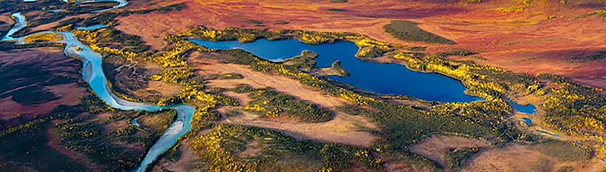

From before the rise of Athens to the height of the Roman Empire, one of the most sought-after products
in the Mediterranean world was a golden-flowered plant called silphion.
For ancient Greek physicians, silphion was a cure-all, prized for everything from stomach pain to wart removal.
Saving Forest 2022
America the Beautiful 2022
Secret of the Whales 2022
Stonehenge revealed 2022